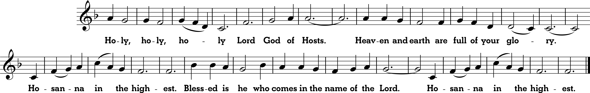
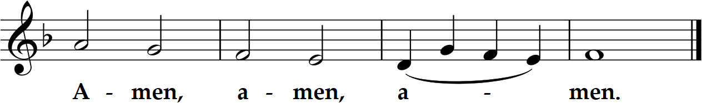

Thirty-Second Sunday in Ordinary Time
Sat. 5:30, Sun. 9 am and 12 noon Masses
Thirty-Second Sunday in Ordinary Time
Sat. 5:30, Sun. 9 am and 12 noon Masses
Prelude “Rhapsody in D-flat Major” Herbert Howells (1892-1983); 12: “O Lord God” Percy Buck (1871-1947)


Resplendent and unfading is wisdom, and she is readily perceived by those who love her, and found by those who seek her. She hastens to make herself known in anticipation of their desire; Whoever watches for her at dawn shall not be disappointed, for he shall find her sitting by his gate. For taking thought of wisdom is the perfection of prudence, and whoever for her sake keeps vigil shall quickly be free from care; because she makes her own rounds, seeking those worthy of her, and graciously appears to them in the ways, and meets them with all solicitude.
We do not want you to be unaware, brothers and sisters, about those who have fallen asleep, so that you may not grieve like the rest, who have no hope. For if we believe that Jesus died and rose, so too will God, through Jesus, bring with him those who have fallen asleep. • Indeed, we tell you this, on the word of the Lord, that we who are alive, who are left until the coming of the Lord, will surely not precede those who have fallen asleep. For the Lord himself, with a word of command, with the voice of an archangel and with the trumpet of God, will come down from heaven, and the dead in Christ will rise first. Then we who are alive, who are left, will be caught up together with them in the clouds to meet the Lord in the air. Thus we shall always be with the Lord. Therefore, console one another with these words.
Jesus told his disciples this parable: "The kingdom of heaven will be like ten virgins who took their lamps and went out to meet the bridegroom. Five of them were foolish and five were wise. The foolish ones, when taking their lamps, brought no oil with them, but the wise brought flasks of oil with their lamps. Since the bridegroom was long delayed, they all became drowsy and fell asleep. At midnight, there was a cry, 'Behold, the bridegroom! Come out to meet him!' Then all those virgins got up and trimmed their lamps. The foolish ones said to the wise, 'Give us some of your oil, for our lamps are going out.' But the wise ones replied, 'No, for there may not be enough for us and you. Go instead to the merchants and buy some for yourselves.' While they went off to buy it, the bridegroom came and those who were ready went into the wedding feast with him. Then the door was locked. Afterwards the other virgins came and said, 'Lord, Lord, open the door for us!' But he said in reply, 'Amen, I say to you, I do not know you.' Therefore, stay awake, for you know neither the day nor the hour."
Homily + Profession of Faith
I believe in one God, the Father almighty,
maker of heaven and earth,
of all things visible and invisible.
I believe in one Lord Jesus Christ,
the Only Begotten Son of God,
born of the Father before all ages.
God from God, Light from Light, true God from true God,
begotten, not made, consubstantial with the Father;
through him all things were made.
For us men and for our salvation he came down from heaven,
and by the Holy Spirit was incarnate of the Virgin Mary,
and became man.
For our sake he was crucified under Pontius Pilate,
he suffered death and was buried,
and rose again on the third day
in accordance with the Scriptures.
He ascended into heaven
and is seated at the right hand of the Father.
He will come again in glory to judge the living and the dead
and his kingdom will have no end.
I believe in the Holy Spirit, the Lord, the giver of life,
who proceeds from the Father and the Son,
who with the Father and the Son is adored and glorified,
who has spoken through the prophets.
I believe in one, holy, catholic and apostolic Church.
I confess one Baptism for the forgiveness of sins
and I look forward to the resurrection of the dead
and the life of the world to come. Amen.
Prayer of the Faithful + Offertory
+ Liturgy of the Eucharist +
May the Lord accept the sacrifice at your hands,
for the praise and glory of his name, for our good, and the good of all his holy Church.



+ Our Father +
Our Father, who art in heaven, hallowed be thy name; thy kingdom come, thy will be done on earth as it is in heaven.
Give us this day our daily bread, and forgive us our trespasses, as we forgive those who trespass against us;
and lead us not into temptation, but deliver us from evil.
Deliver us Lord from every evil, graciously grant peace in our day, that by the help of your mercy we may be always free from sin
and safe from all distress, as we await the blessed hope, and the coming of our Savior, Jesus Christ.
For the kingdom, the power and the glory are yours now and for ever.
+ Sharing of Peace +

Lord, I am not worthy that you should enter under my roof, but only say the word and my soul shall be healed.
Out of the depths I call to you, LORD; Lord, hear my cry!
May your ears be attentive to my cry for mercy.
If you, LORD, keep account of sins, Lord, who can stand?
But with you is forgiveness and so you are revered.
More than sentinels for daybreak, let Israel hope in the LORD,
For with the LORD is mercy, with him is plenteous redemption,
And he will redeem Israel from all its sins.

Queen, mother of mercy: our life, sweetness, and hope, hail. To thee do we cry, poor banished children of Eve.
To you we sigh, mourning and weeping in this valley of tears.
Turn then, our advocate, those merciful eyes toward us. And Jesus, the blessed fruit of thy womb, after our exile, show us.
O clement, O loving, O sweet Virgin Mary
"St. Michael the Archangel, defend us in battle. Be our protection against the wickedness and snares of the devil.
May God rebuke him, we humbly pray; and do thou, O Prince of the heavenly hosts, by the power of God,
cast into hell Satan and all the evil spirits who prowl about the world seeking the ruin of souls. Amen."
Postlude "Allegro comodo in E-flat major (Concert piece No. 1)" Horatio Parker (1863-1919)